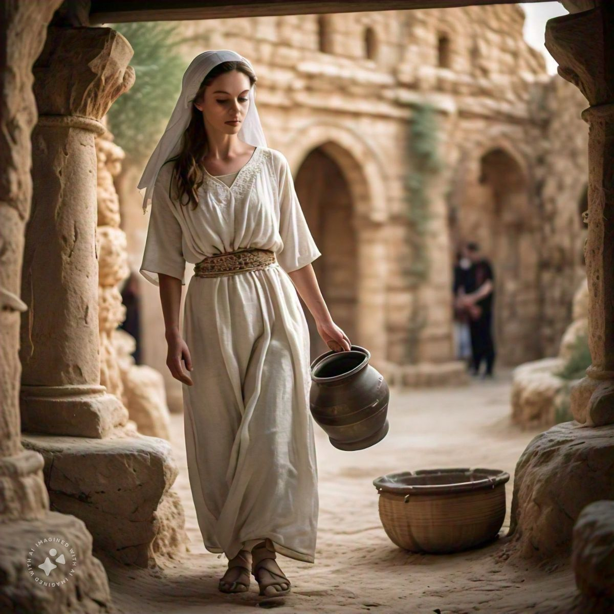
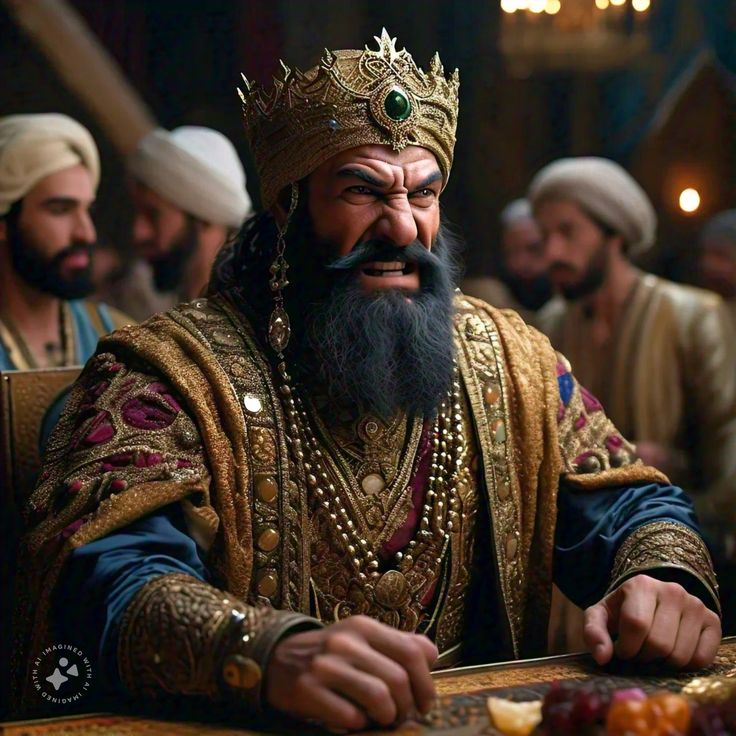
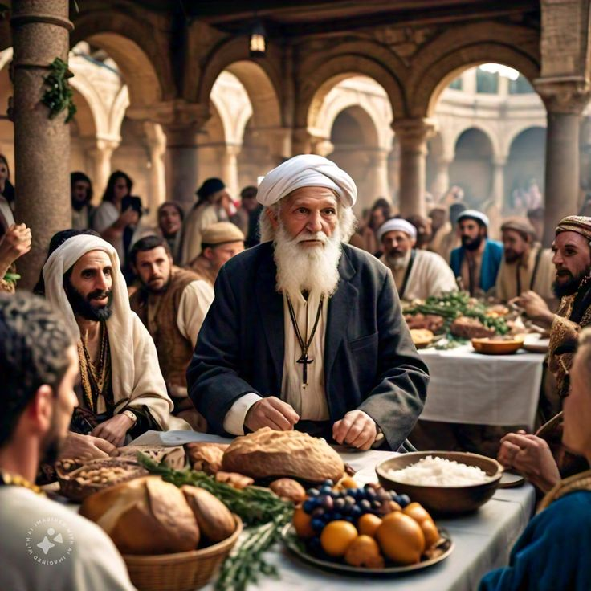
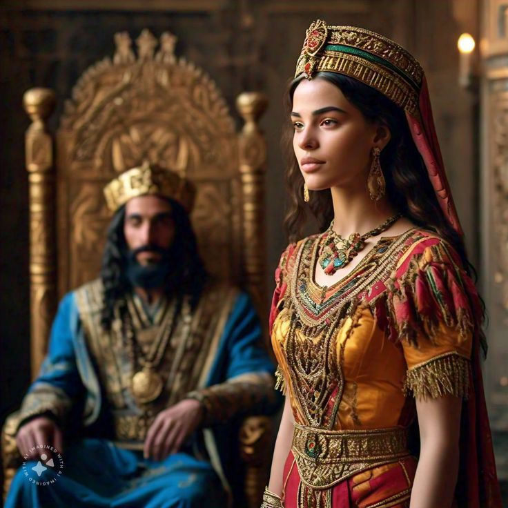
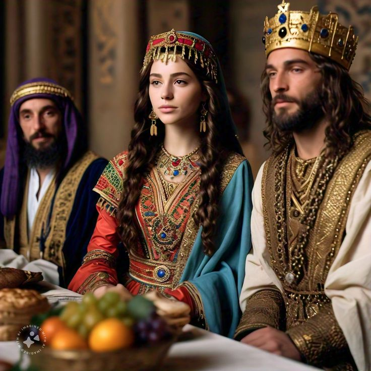

Queen Esther – The Brave and Kind Queen Who Saved Her People
Faith and courage can change the course of history. When one person stands boldly for truth and righteousness, God can use that single act to transform an entire nation. God has a divine purpose for every life. Even when we cannot see His plan, He is working behind the scenes — turning every challenge into a step toward His greater purpose.
Queen Esther – The Brave and Kind Queen Who Saved Her
People

Esther’s Birth and Early Life
எஸ்தரின் பிறப்பும் வாழ்வு
In the ancient kingdom of Persia, King Ahasuerus ruled over many lands. Among the people there lived a young Jewish woman named Esther. She lost her parents at a young age, and her cousin Mordecai lovingly raised her. Esther was beautiful, humble, and kindhearted. Above all, she had great faith in God.
பண்டைய பெர்சிய இராச்சியத்தில் அஹசுவேரு என்ற ராஜா ஆட்சி செய்தார். அந்த நாடுகளில் எஸ்தர் என்ற யூதப் பெண் வாழ்ந்தாள். அவள் சிறு வயதிலேயே தாய்தந்தையற்றவளாகி, அவளுடைய உறவினர் மோர்த்தேகாய் அவளை வளர்த்தார். அவள் அழகிலும், பணிவிலும், நற்குணங்களிலும் சிறந்தவள். அவளின் இதயம் தேவனுக்கு நம்பிக்கையோடு இருந்தது.
Esther Becomes Queen of Persia
எஸ்தர் – பெர்சியாவின் ராணியாக ஆனாள்
One day, the king removed his former queen and sought a new one. Many young women were brought to the palace, including Esther. She found favor with everyone she met, and the king loved her the most. He crowned her as the new queen and called her Esther. Following Mordecai’s advice, she did not reveal that she was Jewish.
ஒரு நாள், ராஜா தனது முந்தைய ராணியை நீக்கினார்; புதிய ராணியைத் தேர்ந்தெடுக்க அழகான இளம்பெண்களை அரண்மனைக்கு அழைத்தார். அவைகளில் எஸ்தரும் ஒருத்தி. அவள் எல்லோரிடமும் கிருபையைப் பெற்றாள்; ராஜாவும் அவளை விரும்பினார். அவளை “எஸ்தர்” என்ற பெயரில் ராணியாக ஆக்கினார். ஆனால், மோர்த்தேகாயின் ஆலோசனைப்படி, அவள் தன் யூத அடையாளத்தை வெளிப்படுத்தவில்லை.

Haman’s Wicked Plot
ஹாமானின் தீய சதி
Haman, the king’s chief official, was very proud. He demanded that everyone bow before him. But Mordecai, being a Jew, refused to do so. Haman was furious and decided not only to punish Mordecai, but to destroy the entire Jewish people! He deceived the king, saying, “The Jews disobey your laws,” and obtained permission to have them killed.
ராஜாவின் அமைச்சராக இருந்த ஹாமான் மிகவும் அகந்தையுடன் இருந்தான். அவன் அனைவரும் தன்னிடம் மண்டியிட வேண்டும் என்று கட்டளையிட்டான். ஆனால் மோர்த்தேகாய் யூதராக இருப்பதால் வணங்கவில்லை. இதனால் ஹாமான் கோபமடைந்தான்; அவன் மோர்த்தேகாயை மட்டுமல்ல, முழு யூத ஜாதியையும் அழிக்க திட்டமிட்டான்! அவன் ராஜாவிடம் சொல்லி, “யூதர்கள் சட்டத்தைக் கேட்கவில்லை” என்று பொய்யாக கூறி, அவர்களை அழிக்க அனுமதி பெற்றான்.

Mordecai’s Plea to Esther
மோர்த்தேகாயின் வேண்டுகோள்
When Mordecai heard the terrible news, he was deeply grieved. He sent a message to Esther, saying: “If you remain silent now, deliverance will come from somewhere else — but you and your family will perish. Perhaps you have been made queen for such a time as this.” Those words touched Esther’s heart.
மோர்த்தேகாய் இந்த செய்தியை அறிந்து துக்கமடைந்தார். அவர் எஸ்தரிடம் தூதரை அனுப்பி கூறினார்: “நீ இப்போது மவுனமாக இருந்தால், யூதர்களுக்கு வேறு வழியிலிருந்து இரட்சிப்பு வரும்; ஆனால் நீயும் உன் குடும்பமும் அழிவாய். இத்தகைய காலத்திற்காகவே நீ ராஜ்யத்தில் இருக்கிறாய்!” அது எஸ்தரின் இதயத்தை உலுக்கியது.

Esther’s Brave Decision
எஸ்தரின் தைரியமான முடிவு
Esther sent a message to her people: “Fast and pray for three days. Then I will go to the king — even though it is against the law. If I perish, I perish.” With courage and faith in God, she went before the king uninvited — risking her life. When the king saw her, he showed her favor and was willing to grant her request.
அவள் யூத மக்களிடம் கூறினாள்: “நீங்கள் மூன்று நாட்கள் நோன்பிருந்து பிரார்த்தியுங்கள். அதற்குப் பிறகு, ராஜாவைச் சந்திப்பேன் — அது சட்டத்திற்கு விரோதமானதாயினும். நான் அழிந்தாலும், அழிந்துவிடட்டும்.” அவள் தன் உயிரையே ஆபத்தில் இட்டு, தேவனில் நம்பிக்கையோடு அரண்மனைக்கு சென்றாள். ராஜா அவளைப் பார்த்தவுடன் அவளிடம் கிருபை காட்டி, அவளது வேண்டுகோளை கேட்கத் தயாரானார்.

Esther’s Banquet and Victory
எஸ்தரின் விருந்து மற்றும் வெற்றி
Esther invited the king and Haman to a banquet. At the second banquet, she revealed the truth: “O King, I am a Jew! Haman has plotted to destroy me and my people!” The king was enraged. He ordered Haman to be executed — on the very gallows Haman had prepared for Mordecai! The Jewish people were saved, and the Feast of Purim was established to celebrate their deliverance.
எஸ்தர் ராஜாவையும் ஹாமானையும் விருந்துக்கு அழைத்தாள். இரண்டாவது விருந்தில், அவள் உண்மையை வெளிப்படுத்தினாள்: “ராஜாவே, நான் யூதர். என்னை மற்றும் என் மக்களை அழிக்க ஹாமான் சதி செய்திருக்கிறான்” ராஜா அதைக் கேட்டதும் மிகுந்த கோபமடைந்தார். அவர் ஹாமானை உடனே தண்டித்தார் — அவன் தானே மோர்த்தேகாய்க்காக கட்டிய தூணில் தூக்கிலிடப்பட்டான்! ⚖️ யூதர்கள் மீண்டனர்; அவர்களுக்காக பூரீம் திருநாள் (Feast of Purim) நிறுவப்பட்டது.
God’s timing is perfect. He places us in certain positions, relationships, and moments “for such a time as this.” When we obey His call, He turns ordinary people into extraordinary instruments of His will. “Be like Esther — rise with faith, speak with courage, and act with love. For when you walk in obedience, God’s favor will always go before you.”